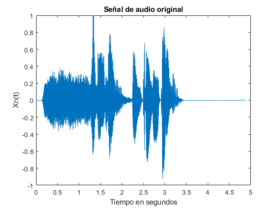
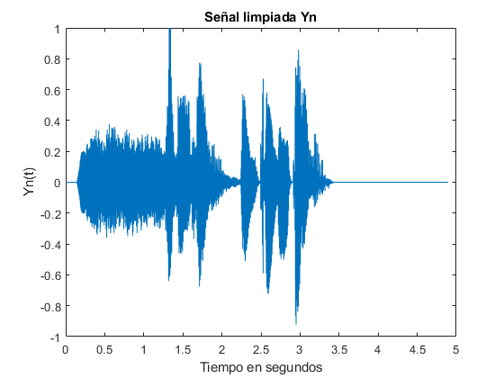
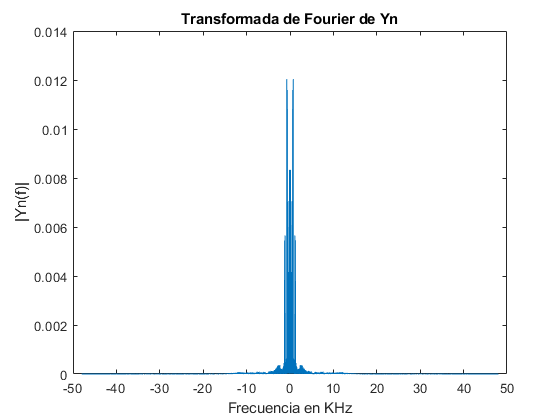
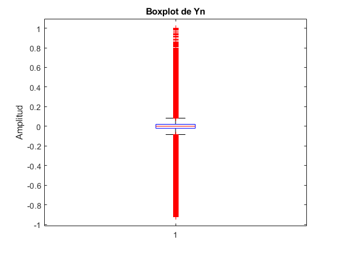
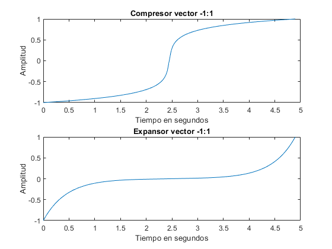
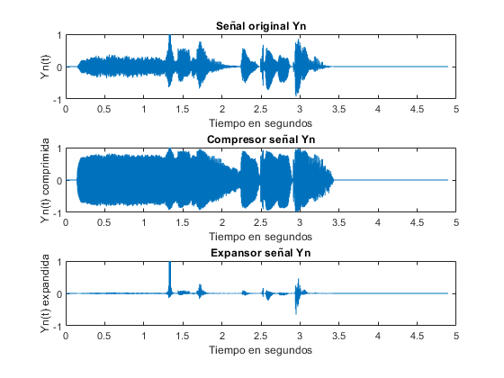
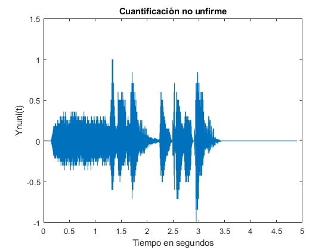
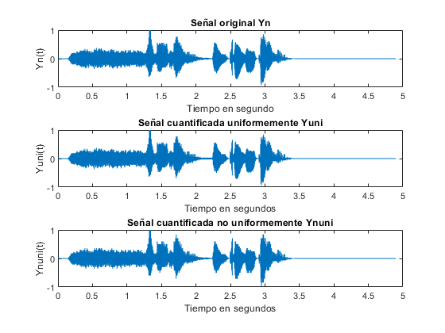
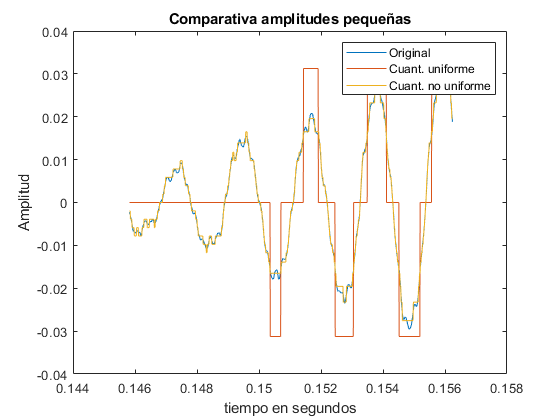
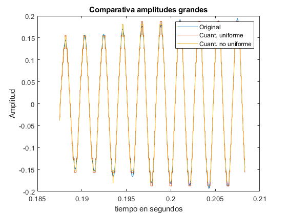

Práctica 2
Teresa González y Miguel Oleo
En esta práctica vamos a poner en práctica los conceptos de cuantificación uniforme y no uniforme. Para ello vamos a trabajar con un fichero de audio y aplicaremos los dos tipos de cuantificación y veremos las diferencias que presentan y como se implementan por software.
Contents
Conceptos de las señales de audio
Apartado a)
[Xn, fs] = audioread('PDS_P3_LE1_G3.wav');
sound(Xn,fs);
Apartado b)
Creamos el vector de tiempos, empezando en 0 y representamos la señal Xn
dt = 1/fs; t= 0:dt:((length(Xn)-1)/fs); figure(); plot(t,Xn) title('Señal de audio original') xlabel('Tiempo en segundos') ylabel('Xn(t)')
Apartado c)
La señal es simétrica, con respecto a 0. Además, la gran mayoría de puntos se encuentran concentrados en torno al valor medio de la señal (que es aproximadamente 0)
Apartado d)
A partir de la gráfica del apartado b), podemos observar que al principio y al final, no hay señal (solo ruido). Para quitarlo, procedemos a poner los valores de Xn(t) anteriores a 0.14 segundos a 0, y lo mismo con los tiempos posteriores a 3.43.
Yn = Xn; index1 = find(t <= 0.1423); index2 = find(t >= 3.43); Yn(index1)=0; Yn(index2)=0; figure; plot(t,Yn) title('Señal limpiada Yn') xlabel('Tiempo en segundos') ylabel('Yn(t)')
Apartado e)
Calculamos la transformada de Fourier de la señal anterior y representamos su espectro en el margen de frecuencias de interes.
Yf = (fft(Yn,length(Yn)))/length(Yn); f_y = linspace(-fs/2,fs/2,length(Yn)); figure(); plot(f_y/1000,fftshift(abs(Yf))); title('Transformada de Fourier de Yn') xlabel('Frecuencia en KHz') ylabel('|Yn(f)|')
Apartado f)
Como se puede observar en la transformada de Fourier, la mayores amplitudes se encuentran en frecuencias próximas a cero. Por ello, es donde más energía se concentra.
Es una representación que no muestra la energía que contienen los armónicos según va variando la señal. Debido a esto, recomendamos representarla mediante un espectrograma, ya que muestra lo anterior.
Apartado g)
Representamos un histograma que muestre los valores de amplitud de cada muestra de la señal Yn.
Viendo esta gráfica, se reafirma que la mayor parte de muestras, tienen amplitud cercana a cero.
figure() histogram(Yn,100); title('Histograma de Yn') xlabel('Amplitud divida en rangos') ylabel('Frecuencia estadística')

Apartado h)
Representación en diagrama de cajas de la señal limpiada (Yn). Se puede observar que el rango intercuartílico no es muy amplio, por lo que volvemos, otra vez, a verificar que la gran mayoría de muestrás están muy concentradas en torno a la mediana. La media y mediana se puede observar que es próximo a cero. También cabe destacar que se muestran muchos datos atípicos.
figure() boxplot(Yn); title('Boxplot de Yn') ylabel('Amplitud')
Apartado i)
A continuación se muestran los datos estadísticos más relevantes:
disp('Media de Yn: ') media = mean(Yn) disp('Mediana de Yn: ') mediana = median(Yn) disp('Desviación típica de Yn: ') desv_tip = std(Yn)
Media de Yn:
media =
-4.7867e-05
Mediana de Yn:
mediana =
0
Desviación típica de Yn:
desv_tip =
0.1251
Apartado j)
La gran mayoria de datos están muy concentrados respescto de la media (aprox cero). Esto confirma que la gran mayoría de las muestás tienen una amplitud pequeña.
Cuantificación uniforme
Apartado a)
Aplicamos el cuantificador, tal y como lo hicimos en la prácctica anterior.
q1 = quantizer('fixed','round','saturate',[7,5]); Yq = num2bin(q1,Yn); figure(); plot(t,bin2num(q1,Yq)) title('Yn cuantificada uniformemente') xlabel('Tiempo en segundos') ylabel('Yq(t)')

Apartado b)
Hemos escogido 5 bits decimales, uno entero y otro de signo (ya que la señal va de -1 a 1, por lo que nos hace falta el signo y un digito entero)
Cuantificación no uniforme
Utilizamos cuantificación no uniforme para mejorar la precisión de nuestra señal cuantificada, ya que en amplitudes pequeñas (la gran mayoría de nuestra señal)los intervalos de cuantificación se hacen más estrechos para amplitudes bajas.
A = 87.6;
Apartado a, b y c)
Hemos implementado el compresor y expansor en una función de Matlab aparte. Como argumentos de entrada recibe primero A (que la hemos fijado anteriormente en el "main") y luego recibe la señal que queremos comprimir. En el expansor, tiene los mismos arguumentos que el compresor.
Para caracterizar estos bloques y apreciar mejor su funcionamiento, creamos un vector de -1:1 y se los pasamos a las funciones. En los plots, se puede ver como en el expansor, las amplitudes cercanas a 0 (eje y), acaparan más rango de amplitud. Sin embargo, el expansor hace todo lo contario, los valores próximos a cero abarcan muy poco rango de amplitud.
Por último se muestra un subplot con la señal original y la señal comprimida y expandida. En esta gráfica se puede observar con más facilidad, cómo las amplitudes pequeñas de la señal original, en el compresor, se han expandido, y en el expansor se han comprimido.
Los nombres de estos bloques pueden ser algo liosos, pero las gráficas muestran fielmente su funcionamiento.
vect = linspace(-1,1,length(t)); figure() subplot(2,1,1) plot(t,compresor(A,vect)); title('Compresor vector -1:1') xlabel('Tiempo en segundos') ylabel('Amplitud') subplot(2,1,2) plot(t,expansor(A,vect)); title('Expansor vector -1:1') xlabel('Tiempo en segundos') ylabel('Amplitud') figure() subplot(3,1,1) plot(t,Yn); title('Señal original Yn') xlabel('Tiempo en segundos') ylabel('Yn(t)') subplot(3,1,2) plot(t,compresor(A,Yn)); title('Compresor señal Yn') xlabel('Tiempo en segundos') ylabel('Yn(t) comprimida') subplot(3,1,3) plot(t,expansor(A,Yn)); title('Expansor señal Yn') xlabel('Tiempo en segundos') ylabel('Yn(t) expandida') 
Apartado d)
Para cuantificar no uniformemente, primero pasamos la señal por el compresor, luego por el cuantificador uniforme y, por último, por el expansor.
Ycomp = compresor(A,Yn); Ycuant = bin2num(q1,num2bin(q1,Ycomp)); Ynuni = expansor(A,Ycuant); figure(); plot(t,Ynuni); title('Cuantificación no unfirme') ylabel('Ynuni(t)') xlabel('Tiempo en segundos')
Analisis resultados
Apartado a)
Reproducimos las tres señales y podemos observar, que al cuantificar, se introduce un leve ruido de fondo (ruido de cuantificación). La señal cuantificada no uniformemente, es levemente más fiel a la señal original (se escucha menos ruido).
Yuni = bin2num(q1,Yq); sound(Yn,fs); sound(Yuni,fs); sound(Ynuni,fs);
Apartado b)
En la primera gráfica, hemos representado las tres señales por separado. Debido a esto, no se puede apreciar mucha diferencia hasta que no hacemos zoom. Por ello, en la siguiente gráfica hemos representado un pequño segmento de las señales y las hemos superpuesto. En esta última gráfica se puede apreciar muiy bien como funcionan los distintos codificadores. Es muy visible como el codificador uniforme no es capaz de distinguir niveles de amplitud pequeños, mientras que el no uniforme si los cuantifica con más precisión.
Por último, la tercera gráfica es la misma que la segunda pero con una sección de señal con mayor amplitud. En esta, se puede observar como el detalle que se consigue al cuantificar entre no uniforme y uniforme en amplitudes mas altas, es similar.
figure(); subplot(3,1,1) plot(t,Yn) title('Señal original Yn') xlabel('Tiempo en segundo') ylabel('Yn(t)') subplot(3,1,2) plot(t,Yuni) title('Señal cuantificada uniformemente Yuni') xlabel('Tiempo en segundos') ylabel('Yuni(t)') subplot(3,1,3) plot(t,Ynuni) title('Señal cuantificada no uniformemente Ynuni') xlabel('Tiempo en segundos') ylabel('Ynuni(t)') figure() plot(t(14000:15000),Yn(14000:15000)) title('Comparativa amplitudes pequeñas') xlabel('tiempo en segundos') ylabel('Amplitud') hold on plot(t(14000:15000),Yuni(14000:15000)) hold on plot(t(14000:15000),Ynuni(14000:15000)) legend('Original','Cuant. uniforme','Cuant. no uniforme') figure() plot(t(18000:20000),Yn(18000:20000)) title('Comparativa amplitudes grandes') xlabel('tiempo en segundos') ylabel('Amplitud') hold on plot(t(18000:20000),Yuni(18000:20000)) hold on plot(t(18000:20000),Ynuni(18000:20000)) legend('Original','Cuant. uniforme','Cuant. no uniforme')  
Apartado c)
A continuación mostramos los resultados del error cuadrático medio de las señales cuantifiacas respecto de la señal original.
Como nos esperábamos, la cuantificación no uniforme presenta una mejora en términos de error cuadrático medio. Concuerda con nuestra intuición, ya que nos parecía que se escuchaba mejor la señal cuantificada no uniformemente. También concuerda con las gráficas anteriores en las que se puede apreciar que la cuantificación no uniforme es capar de representar mejor la señal original en comparación con la uniforme
disp('ECM con la señal Uniformemente cuantificada') disp(ECM(Yn,Yuni)) disp('ECM con la señal no uniformemente cuantificada') disp(ECM(Yn,Ynuni))
ECM con la señal Uniformemente cuantificada 5.3038e-05 ECM con la señal no uniformemente cuantificada 3.8466e-05